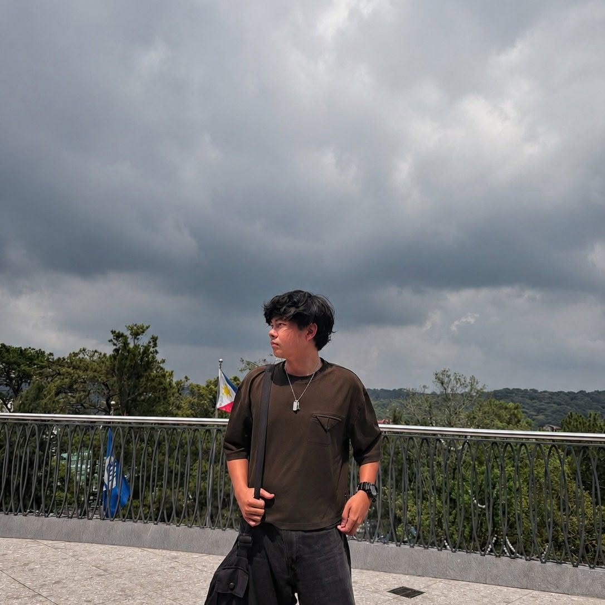

Education
University of Northern Philippines
Bachelor of Science in Computer Science
BSCS 3A · PresentSTI College - Vigan
Senior High School · General Academic Strand
BS COMPUTER SCIENCE STUDENT
A Computer Science student at the University of Northern Philippines interested in computers, technology, web development, and practical digital solutions.
JOHANN MARQUEZ CHIU
Computer Science StudentGET TO KNOW ME

I am Johann Marquez Chiu, a Bachelor of Science in Computer Science student at the University of Northern Philippines.
My interest in computers and technology led me to pursue Computer Science. During my studies, I have worked with programming, web development, computer systems, artificial intelligence, and cloud-related application concepts.
I learn best through hands-on work. School projects have given me opportunities to solve problems, try different technologies, and understand how computer science can be applied to real situations.
Outside academics, my previous work experience also helped me develop communication, teamwork, responsibility, adaptability, and customer-service skills.
MY BACKGROUND
Bachelor of Science in Computer Science
BSCS 3A · PresentSenior High School · General Academic Strand
Worked on school projects involving programming, web development, computer systems, artificial intelligence, and technology.
Developed customer service, communication, teamwork, responsibility, and adaptability in a fast-paced work environment.
Gained experience working with people from different backgrounds, strengthening communication, independence, responsibility, and adaptability.
SELECTED WORK
A school project focused on a practical parking-related solution. Working on ParkEase helped me apply programming concepts while learning more about system development and problem solving.
This responsive portfolio website, built entirely with HTML and CSS, presents my education, experience, skills, interests, and projects.
An academic Computer Science project where I applied concepts learned throughout my studies.
View Project →Academic work involving artificial intelligence concepts such as neural networks, forward and back propagation, matrices, filters, pooling, and responsible AI use.
A school activity involving the planning of a cloud-based buy-and-sell application concept for items such as mobile devices.
Academic work covering operating systems, computer hardware, and fundamental concepts related to computer systems.
GET IN TOUCH
Want to connect or learn more about my work? You can reach me through the contact information below.
Cabugao, Ilocos Sur, Philippines
Computer Science Student